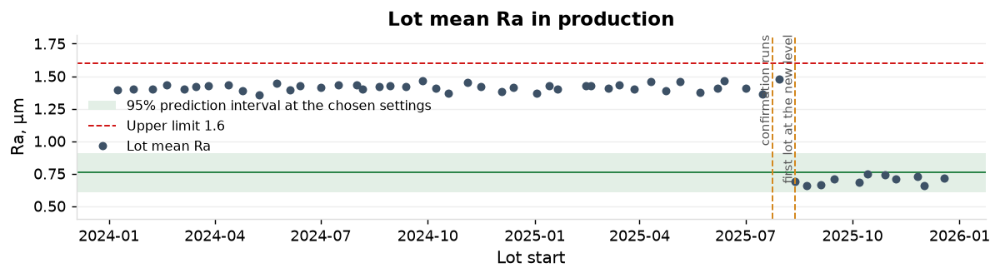
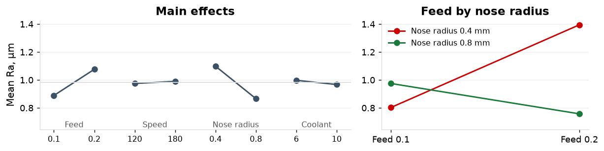

Ra on C-16180-28 (part P-16180-A, 316 stainless) ran at 1.41 µm on 44 lots against an upper limit of 1.6 µm: index 0.96, 2,006 ppm expected above the limit.

Ra at or below 0.76 µm with the index against the 1.6 µm limit at or above 1.33, held through 2026.

| Action | Owner | When |
|---|---|---|
| Feed 0.20 mm/rev and 0.8 mm nose radius written into the routing and the setup sheet | Manufacturing engineer | in production from 12 August 2025; documents March 2026 |
| Lot mean Ra against the prediction interval as the control limit on the SPC chart | Quality engineer | March 2026 |
Ra 0.700 µm on 11 lots since 12 August 2025, every lot inside the prediction interval; 4 of 4 confirmation runs inside it; index 5.65 against the limit, from 0.96.
| Lots | Mean Ra | Index | Expected ppm above the limit | |
|---|---|---|---|---|
| Before the change | 44 | 1.415 | 0.96 | 2,006 |
| After the change | 11 | 0.701 | 5.65 | 0 |
Lot mean Ra against the interval on every lot. A further experiment on the two aliased pairs if a customer asks for the speed and coolant effects.